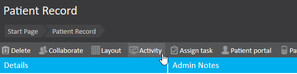
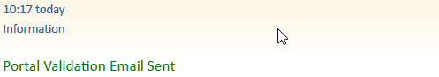
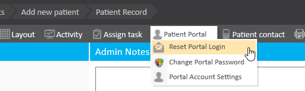

When a patient is registered within the system and added to a charge band that supports online bookings, they receive a portal validation email. This email is essential as it allows the patient to confirm their identity and gain access to the patient portal for future interactions and bookings. However, issues with email receipt can occasionally arise, and it’s important to confirm whether this initial validation email was successfully sent.
This article aims to guide users through verifying if a portal validation email was successfully sent to a patient. It also provides troubleshooting steps for resending the email or addressing any potential delivery issues, ensuring patients receive the necessary confirmation to access the portal.
To verify that a portal validation email has been successfully sent:
Open the Patient’s Record: 
Go to the patient's profile and select Activity.
Look for an Email Entry: 
If you see an entry indicating the email was sent, then the validation email was successfully delivered.
If No Entry Is Visible:
